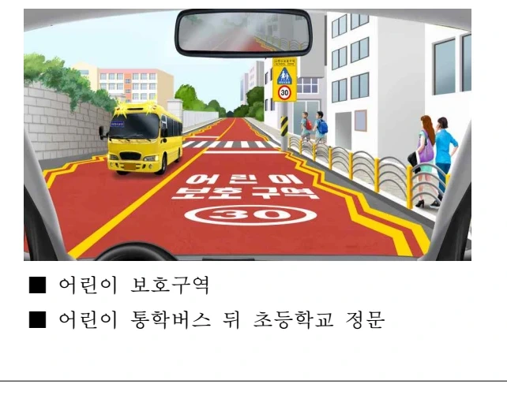

843. Дараах замын нөхцөлд хамгийн аюулгүй жолоодох арга аль 2 вэ?

- ①Хүүхдийн сургуулийн автобусны араас хүүхэд гэнэт гарч ирж болзошгүй тул анхаарна.
- ②Урд талын гэрлэн дохиогүй явган хүний гарц дээр явган зорчигч байхгүй тул удаан явж өнгөрнө.
- ③Баруун талд гүйж байгаа хүүхдүүд гэнэт явган хүний гарц руу орж ирж болзошгүй тул явган хүний гарцын өмнө түр зогсоно.
- ④Энэ бүсэд зөвхөн хүүхдийн сургуулийн автобусанд түр зогсох болон зогсоол хийхийг зөвшөөрсөн байдаг.
- ⑤Урд баруун талын хүүхдийн сургуулийн автобусанд хүүхдүүд сууж, бууж байгаа тул автобусны хажуугаар өнгөрөхөөс өмнө түр зогсоод өнгөрнө.
Хариулт харах
Зөв хариулт
① Хүүхдийн сургуулийн автобусны араас хүүхэд гэнэт гарч ирж болзошгүй тул анхаарна.
③ Баруун талд гүйж байгаа хүүхдүүд гэнэт явган хүний гарц руу орж ирж болзошгүй тул явган хүний гарцын өмнө түр зогсоно.
Үндэслэл
② Жолооч нар явган зорчигч гарцаар гарч байгаа эсэхээс үл хамааран хүүхэд хамгааллын бүсэд дохио суулгаагүй (хэрэв зогсоох шугам суурилуулсан бол энэ нь зогсолтын шугамыг хэлнэ) явган хүний гарцын өмнө түр зогсох ёстой. (Замын хөдөлгөөний тухай хуулийн 27 дугаар зүйлийн 7 дахь хэсэг) ④ Хүүхдийн хамгаалалтын бүсэд зогсоол, зогсоохыг хориглоно (Замын хөдөлгөөний тухай хуулийн 32 дугаар зүйлийн 8 дахь хэсэг). ⑤ Хүүхдийн сургуулийн автобусны шар анивчдаг гэрлүүд нь зам дээр зогсох, хаалт хаагдсан үед ашиглагддаг. (Автомашины болон автомашины эд ангиудын гүйцэтгэл, стандартын дүрмийн 48 дугаар зүйлийн 4 дэх хэсэг)
Үндэслэлийн текст нь машин орчуулга.